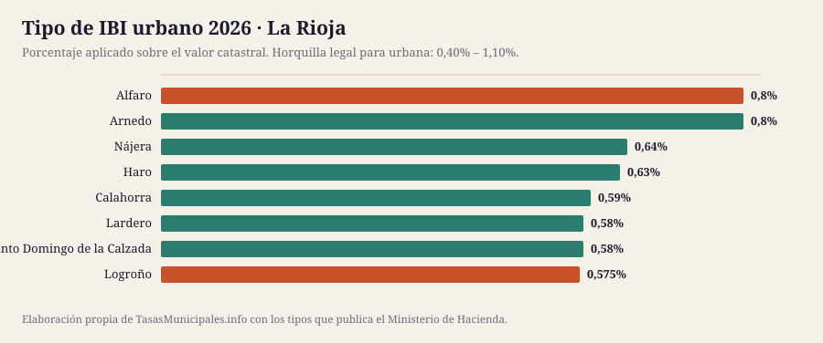
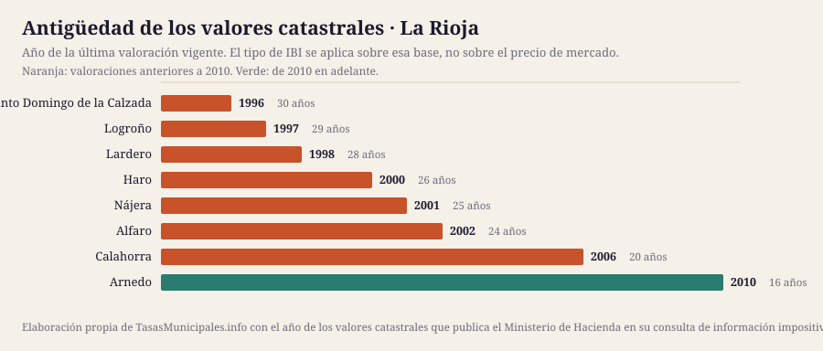

IBI, tasa de basuras y plusvalía en La Rioja 2026
Esta guía reúne el IBI, la plusvalía municipal, el impuesto de circulación y las bonificaciones de los 8 municipios de La Rioja que cubrimos, con el detalle de cada uno y una tabla para compararlos de un vistazo. Población cubierta: 241.584 habitantes.
Lo que cuesta el IBI en La Rioja en 2026
El tipo de IBI urbano en La Rioja se mueve entre el 0,575% de Logroño y el 0,8% de Alfaro, con una media de 0,65% en los 8 municipios analizados. Esa horquilla parece pequeña, pero sobre un valor catastral de 50.000 € supone una diferencia de 113 € al año según dónde esté el inmueble: 287 € en Logroño frente a 400 € en Alfaro.
El tipo no lo explica todo: sobre él se aplica el valor catastral, y en La Rioja las valoraciones vigentes van de 1996 en Santo Domingo de la Calzada a 2010 en Arnedo. En 7 de los 8 municipios con dato la última valoración es anterior a 2010, así que la base del recibo arrastra el mercado inmobiliario de entonces. El año de los valores de cada municipio está en la tabla, tal y como lo publica el Ministerio de Hacienda.
Aquí no publicamos el importe de la tasa de residuos ni las fechas de cobro de cada municipio: no existe fuente estatal que los recoja y preferimos el hueco a un dato sin respaldo. Lo que sí fija la ley es el plazo por defecto del IBI, del 1 de septiembre al 20 de noviembre cuando la ordenanza no señala otro (art. 62.3 de la Ley General Tributaria). La mecánica general del impuesto está en las guías de IBI 2026, bonificaciones y plusvalía; aquí van los datos de La Rioja.
Ficha fiscal de cada municipio
Tabla comparativa: el IBI en los 8 municipios de La Rioja
Ordenable por cualquier columna. Todas las cifras salen de la consulta de información impositiva del Ministerio de Hacienda. «Cuota IBI» aplica el tipo de cada municipio a un valor catastral común de 50.000 €; con el de tu recibo, usa la calculadora. «Valores catastrales» es el año de la última valoración vigente, que determina la base sobre la que se aplica el tipo.
| Municipio | Habitantes | IBI urbano | IBI rústico | Cuota IBI (VC 50.000 €) | Valores catastrales | Tipo BICE |
|---|---|---|---|---|---|---|
| Logroño | 152.150 | 0,575% | 0,85% | 287 € | 1997 | 0,64% |
| Calahorra | 25.367 | 0,59% | 0,73% | 295 € | 2006 | 0,94% |
| Arnedo | 15.140 | 0,8% | 0,45% | 400 € | 2010 | 1% |
| Haro | 12.167 | 0,63% | 0,66% | 315 € | 2000 | 1,3% |
| Lardero | 12.060 | 0,58% | 0,88% | 290 € | 1998 | 1,3% |
| Alfaro | 9.923 | 0,8% | 0,9% | 400 € | 2002 | 1,3% |
| Nájera | 8.336 | 0,64% | 0,79% | 320 € | 2001 | 0,6% |
| Santo Domingo de la Calzada | 6.441 | 0,58% | 0,9% | 290 € | 1996 | 0,71% |


Quién gestiona y cobra el IBI en La Rioja
El recibo, el calendario y las solicitudes se tramitan donde esté la recaudación, que no siempre es el ayuntamiento:
| Provincia | Municipios en la guía | Organismo de recaudación | Estado del enlace |
|---|---|---|---|
| La Rioja | 8 | Gobierno de La Rioja | pendiente de comprobar |
De ahí que no haya una fecha única para toda La Rioja: cada organismo publica su calendario.
¿Dónde se paga más y menos IBI en La Rioja?
La mediana del tipo urbano de los 8 municipios de La Rioja es del 0,61%, y está en línea con la mediana de los 134 municipios que analizamos en toda España (0,61%).
En el extremo alto empatan 2 municipios al 0,8%; en el bajo está Logroño con el 0,575%. Ojo: un tipo alto no significa un recibo alto, porque la cuota es valor catastral × tipo. Ranking nacional →
Quién ha movido el tipo entre 2024 y 2025
En La Rioja, ningún municipio ha subido el tipo y un municipio lo ha bajado; el resto lo mantiene.
| Municipio | 2024 | 2025 | Variación |
|---|---|---|---|
| Logroño | 0,58% | 0,575% | Baja 0,005 puntos |
ICIO, impuesto de circulación y plusvalía en La Rioja
El IBI no es el único tributo que aprueba un ayuntamiento. En La Rioja, el ICIO va del 3% al 4% (mediana 3,5%); un turismo de 8 a 11,99 CV paga entre 49,08 € y 68,16 € al año; 4 de 8 aplican los coeficientes máximos de plusvalía del art. 107.4 TRLRHL.
| Municipio | ICIO (obras) | IVTM 8–11,99 CV | Plusvalía: tipo máximo | ¿Coeficientes al tope legal? |
|---|---|---|---|---|
| Alfaro | 3,79% | 68,16 € | 30% | Sí |
| Arnedo | 3,5% | 62,90 € | 30% | Sí |
| Calahorra | 3% | 61,80 € | 20% | Sí |
| Haro | 4% | 49,08 € | 30% | Sí |
| Lardero | 3,5% | 49,41 € | 22,7% | No |
| Logroño | 3,07% | 61,59 € | 30% | No |
| Nájera | 3,1% | 51,60 € | 30% | No |
| Santo Domingo de la Calzada | 4% | 59,98 € | 28,4% | No |
Fuente: Ministerio de Hacienda. El guion marca lo que la consulta no publica. La tarifa completa del IVTM está en cada ficha.
Guía del impuesto de circulación → · Comparativa del IVTM → · Quién aplica el coeficiente máximo de plusvalía →
Cuándo se revisaron los valores catastrales en La Rioja
La cuota del IBI es valor catastral × tipo, así que la fecha de la última valoración colectiva pesa tanto como el porcentaje que vota el pleno. En La Rioja la mediana está en 2000, más antigua que la del conjunto de la guía (2005), y 7 de 8 municipios arrastran valores de hace 20 años o más.
| Municipio | Año de la valoración | Antigüedad | Tipo urbano |
|---|---|---|---|
| Santo Domingo de la Calzada | 1996 | 30 años | 0,58% |
| Logroño | 1997 | 29 años | 0,575% |
| Lardero | 1998 | 28 años | 0,58% |
| Haro | 2000 | 26 años | 0,63% |
| Nájera | 2001 | 25 años | 0,64% |
| Alfaro | 2002 | 24 años | 0,8% |
| Calahorra | 2006 | 20 años | 0,59% |
| Arnedo | 2010 | 16 años | 0,8% |
Qué es el valor catastral, cómo se consulta y cómo se corrige → · Qué implica una ponencia desfasada →
Población de los municipios de La Rioja (2020–2025)
El padrón no cambia el IBI, pero sí explica la tasa de residuos: cuando el coste del servicio se reparte entre menos vecinos, la tarifa sube. En conjunto, los 8 municipios de La Rioja que cubrimos han ganado 3.224 habitantes desde 2020 (7 crecen, 1 pierde población).
| Municipio | 2020 | 2025 | Variación | % |
|---|---|---|---|---|
| Logroño | 152.485 | 152.150 | -335 | -0,2 % |
| Calahorra | 24.531 | 25.367 | +836 | +3,4 % |
| Arnedo | 15.015 | 15.140 | +125 | +0,8 % |
| Haro | 11.557 | 12.167 | +610 | +5,3 % |
| Lardero | 10.813 | 12.060 | +1.247 | +11,5 % |
| Alfaro | 9.611 | 9.923 | +312 | +3,2 % |
| Nájera | 8.072 | 8.336 | +264 | +3,3 % |
| Santo Domingo de la Calzada | 6.276 | 6.441 | +165 | +2,6 % |
Fuente: INE, padrón a 1 de enero.

Ficha fiscal de los 8 municipios de La Rioja
Cada ficha recoge el detalle de ese ayuntamiento: tipos aprobados, calendario de cobro, bonificaciones, plusvalía y enlaces oficiales donde comprobarlo.
- Logroño — IBI 0,575% · cuota 287 € con VC de 50.000 € · valores de 1997
- Calahorra — IBI 0,59% · cuota 295 € con VC de 50.000 € · valores de 2006
- Arnedo — IBI 0,8% · cuota 400 € con VC de 50.000 € · valores de 2010
- Haro — IBI 0,63% · cuota 315 € con VC de 50.000 € · valores de 2000
- Lardero — IBI 0,58% · cuota 290 € con VC de 50.000 € · valores de 1998
- Alfaro — IBI 0,8% · cuota 400 € con VC de 50.000 € · valores de 2002
- Nájera — IBI 0,64% · cuota 320 € con VC de 50.000 € · valores de 2001
- Santo Domingo de la Calzada — IBI 0,58% · cuota 290 € con VC de 50.000 € · valores de 1996
Preguntas frecuentes sobre el IBI y las tasas en La Rioja
¿Qué municipio de La Rioja tiene el IBI más alto en 2026?
De los 8 municipios analizados, el tipo urbano más alto es el de Alfaro (0,8%) y el más bajo el de Logroño (0,575%). Sobre un valor catastral de 50.000 € son 400 € frente a 287 € al año.
¿Cuál es el tipo medio de IBI en La Rioja?
La media de los 8 municipios de La Rioja que recoge esta guía es del 0,65%, con una mediana del 0,61%. La ley permite moverse entre el 0,40% y el 1,10% en urbana.
¿Cuándo se paga el IBI en La Rioja?
No hay una fecha única: la fija cada ordenanza y se aprueba cada ejercicio, por eso no publicamos fechas concretas. Cuando la ordenanza no señala otro plazo se aplica el del artículo 62.3 de la Ley General Tributaria, del 1 de septiembre al 20 de noviembre, y quien lo modifique no puede dejarlo en menos de dos meses. El calendario del año lo publica el organismo que recauda, enlazado en la ficha de cada municipio.
¿Cuánto se paga de basuras en La Rioja?
No lo publicamos porque no podemos verificarlo: la tarifa está en la ordenanza fiscal de cada ayuntamiento y ninguna administración estatal las reúne. La Ley 7/2022 obliga desde el 10 de abril de 2025 a cobrar una tasa de residuos específica, diferenciada y no deficitaria (art. 11.3), y solo exige comunicarla a la comunidad autónoma (art. 11.5). En la guía de la tasa de residuos explicamos dónde localizar la tuya.
¿Quién cobra el IBI en La Rioja?
En La Rioja la recaudación de buena parte de los ayuntamientos corre a cargo de: Gobierno de La Rioja. El resto la lleva su propio ayuntamiento. Cada ficha indica cuál corresponde y enlaza dónde consultar el calendario.
¿Dónde cuesta más el impuesto de circulación en La Rioja?
Por un turismo de 8 a 11,99 caballos fiscales, el más caro de La Rioja es Alfaro con 68,16 € al año y el más barato Haro con 49,08 €. La cuota mínima que fija la ley es de 34,08 €.
Qué está verificado en esta página
| Dato | Estado en La Rioja |
|---|---|
| Tipos de IBI, rústica, BICE y año de los valores catastrales | 8 de 8 contrastados con el Ministerio de Hacienda |
| Tasa de residuos y fechas de cobro | No se publican: las fija cada ordenanza, no hay registro estatal y no hemos podido acceder a una fuente primaria |
Si un dato no coincide con lo que dice tu ayuntamiento, manda la ordenanza publicada en el boletín oficial. Qué fuente respalda cada dato y cómo corregimos → · Avisar de un error
Normativa citada en esta página
- Real Decreto Legislativo 2/2004 (texto refundido de la Ley Reguladora de las Haciendas Locales)
- Real Decreto Legislativo 1/2004 (texto refundido de la Ley del Catastro Inmobiliario)
- Ley 7/2022, de 8 de abril, de residuos y suelos contaminados para una economía circular
- Real Decreto-ley 26/2021, de 8 de noviembre (adaptación del IIVTNU a la jurisprudencia constitucional)
- Sentencia del Tribunal Constitucional 182/2021, de 26 de octubre
- Ley 58/2003, de 17 de diciembre, General Tributaria
- Sede Electrónica del Catastro